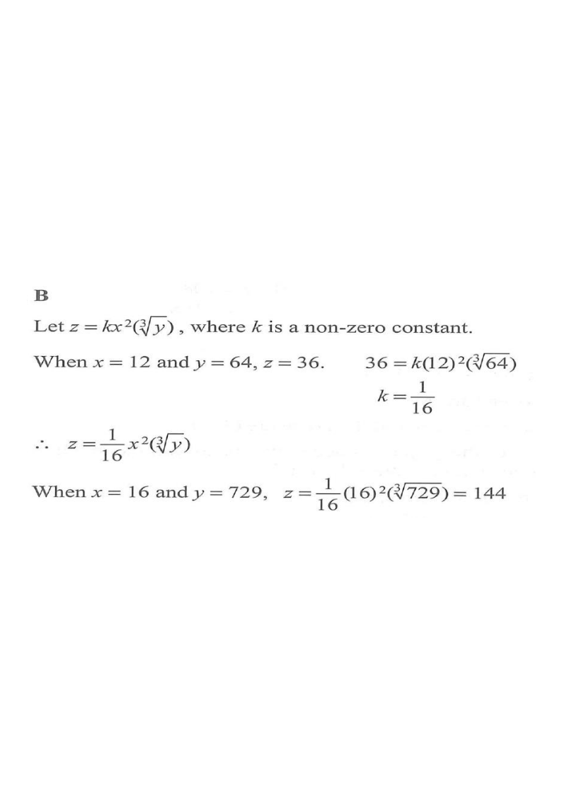

x (square factor)y (cube-root factor)z (result)constant k
HKDSE 2023 · Paper 2 · Q13
It is given that $z$ varies as the square of $x$ and the cube root of $y$. When $x=12$ and $y=64$, $z=36$. When $x=16$ and $y=729$, $z=$
A. 108.
B. 144.
C. 162.
D. 216.

Figure (original exam diagram)
1Write the variation equation
Joint Variation\(z=k\,x^{2}\sqrt[3]{y}\)Direct variation as \(x^{2}\) and as the cube root of \(y\) puts both factors in the numerator.
“$z$ varies as the square of $x$ and the cube root of $y$” means the combined variation
$$z = k\,x^{2}\sqrt[3]{y}$$
where $k$ is a non-zero constant.
Hint: “varies as the square of x” → factor $x^{2}$; “cube root of y” → factor $\sqrt[3]{y}$.
2Substitute the first data set
Put $x=12$, $y=64$, $z=36$:
$$36 = k(12)^{2}\sqrt[3]{64}$$
Since $12^{2}=144$ and $\sqrt[3]{64}=4$,
$$36 = k(144)(4) = 576k$$
Hint: evaluate the powers first before solving for $k$.
3Find the constant $k$
Solving for the Constant of Variation\(k=\dfrac{z}{x^{2}\sqrt[3]{y}}\)Substituting \(x=12\), \(y=64\), \(z=36\) gives \(k=\dfrac{36}{144\times4}=\dfrac{1}{16}\).
$$k = \frac{36}{576} = \frac{1}{16}$$
So the variation equation is
$$z = \frac{1}{16}\,x^{2}\sqrt[3]{y}$$
Hint: simplify the fraction — $36/576$ reduces to $1/16$.
4Substitute the new data set
Now $x=16$ and $y=729$. Note $16^{2}=256$ and $\sqrt[3]{729}=9$.
Comparing with the options, $z=144$, i.e. option B.
Hint: cancelling $256/16 = 16$ keeps the arithmetic simple.
Answer: B 144
PRACTICESimilar question — try it yourself
Question. It is given that \(z\) varies as the square of \(x\) and the cube root of \(y\). When \(x=8\) and \(y=27\), \(z=48\). Find \(z\) when \(x=10\) and \(y=1000\).